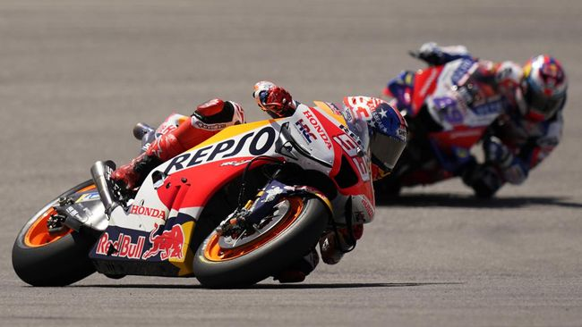

CNN Indonesia
Minggu, 10 April 2022
Marc Marquez mengaku tak percaya diri di kualifikasi MotoGP Amerika 2022. (AP/Eric Gay)
Jakarta, CNN Indonesia -- Marc Marquez yang kembali dari cedera harus melawan ketidakpercayaan diri di MotoGP Amerika 2022, Senin (11/4) dini hari WIB.
Marc Marquez yang kembali dari cedera harus melawan ketidakpercayaan diri di MotoGP Amerika 2022, Senin (11/4) dini hari WIB.
"Ada beberapa traffic dan saya tidak ingin memaksa. Kemudian saya tidak percaya diri dan itu menjadi kesalahan," ujarnya.
Pembalap asal Spanyol itu tampil mengesankan di FP3 dengan meraih posisi keempat di mana Fabio Quartararo keluar sebagai yang tercepat. Kemudian ia berhasil menempati urutan kedua di FP4.
Namun, Marquez hanya mampu berada di urutan ke-9 di babak kualifikasi MotoGP Amerika. Performanya menurun karena kurang percaya diri.